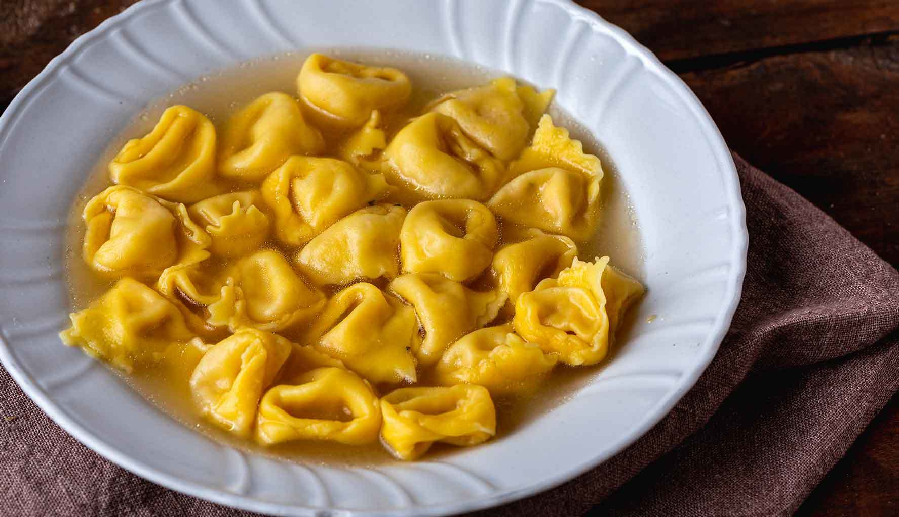

Tortellini

Description
Tortellini in broth is a traditional stuffed pasta dish from Emilia Romagna.
A delicious meat filling enclosed in small egg pasta treasures, raw ham,
mortadella and Parmigiano Reggiano, homemade tortellini are a true glory
of Italian cuisine and a must on the holiday table.
The recipe for tortellini involves different variations from family to family,
not to mention the differences between the Modenese and Bolognese versions.
Ingredients
Ingredients for the hand-rolled pasta
- Flour 0 => 300g
- Eggs => 195g (approximately three medium eggs)
Ingredients for the stuffing
- Pork loin (loin, single piece) => 100g
- Mortadella (single piece) => 100g
- One egg
- Nutmeg to taste
- Raw ham (single piece) => 100g
- Parmigiano Reggiano DOP => 150g
- Fine salt to taste
Tips
-
If you use the puff pastry machine to roll out the dough, it is advisable
to mix two different types of flour, 0 and remilled semola.
This way you will have a coarser dough.
Steps
-
First take care of the filling, which will need to rest 12 hours in the refrigerator.
Take the ham and mortadella, remove the tough parts and from the ham remove the rind (pigskin).
- Then cut everything into coarse pieces, including the loin in the same way.
-
Pass through the meat mincer, with medium size mold collecting the minced meat in a bowl.
Do not set aside the meat mincer, because you will need it again.
-
Add grated Parmigiano Reggiano, a pinch of salt (not too much, it is already very tasty),
and a pinch of pepper to the minced meat.
- Start kneading with your hands and add the egg.
- Add a grated nutmeg (you can abound).
- Knead with your hands until you have a homogeneous mixture.
- Again, pass everything through the meat grinder using a smaller size this time.
- Knead again by hand, cover with plastic wrap and let rest in the refrigerator for 12 hours.
-
After this time has elapsed, start preparing the egg pasta.
Pour the flour onto a pastry board and make the classic
fountain shape.
- Pour the lightly beaten eggs inside and begin mixing the ingredients with a fork so that the flour slowly gathers on the edges.
- Knead by hand, with a movement from the outside to the inside.
- Continue kneading in this way, rotating the dough, until the mixture is smooth.
- Cover with plastic wrap and let stand for 30 minutes.
- After resting, remove the foil and place the dough on the pastry board.
-
Crush it with your hands to flatten it and give it a round shape, then roll it out with a rolling pin until you get a very thin sheet.
So thin that by lifting it you should be able to catch a glimpse of what is behind it.
- Cut the puff pastry to make squares 2.5-3 cm in size on each side.
- Place a tip of filling in the center of each square.
-
Lift one, close it so that it forms a triangle, and lightly pinch the edges.
Now lower the two side edges, giving it a sort of pinch, and turn the tortellino around your finger.
Isn't it clear? help
- Do the same for all the others and arrange them on a tray.
Food preservation
Freshly made tortellini can be frozen, well separated from each other for 30 minutes and
then collected together in a freezer bag.
If you do not want to freeze them, let them dry well and store them for a day in the refrigerator,
tightly closed in a container, either raw or cooked.
About tortellini
Historian Cervellati, in one of his manuscripts mentions "Tortellum ad Natale" in Bolognese tables as early as the 12th century.
Historical and literary references appear from the early 1300s, in a recipe in Modenese dialect "torteleti de enula,"
while in the 1400s the tortellino is even mentioned in a novella by Boccaccio in the "Decameron."
One of the important dates for the tortellino is 1904, indeed in that year the Bartani brothers from Emilia,
participating in the Los Angeles fair, present the tortellino as well as the correct way to preserve them.
From that moment on, the tortellino becomes known worldwide.